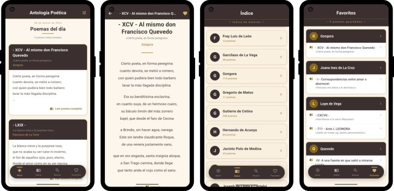

Poemario – Colección de Sonetos del Siglo de Oro Español
Poemario es una aplicación que reúne miles de sonetos del Siglo de Oro español, permitiendo explorarlos y descubrir nuevos autores fácilmente.
- Acceso a un índice con más de 50 autores y sus poemas.
- Presentación de dos sonetos aleatorios cada día.
- Guardado de poemas favoritos para consulta posterior.
- Permite buscar palabras dentro de los títulos o poemas de la colección.

La colección de poemas se ha extraído de la Biblioteca Virtual Miguel de Cervantes.
Descargar en Google Play · Descargar en App Store ·Política de privacidad · Soporte
Otras ediciones
Próximamente, la misma aplicación en otros idiomas:
- English Verse, poesía en inglés: privacidad · soporte
- Poésie française, poesía en francés: privacidad · soporte